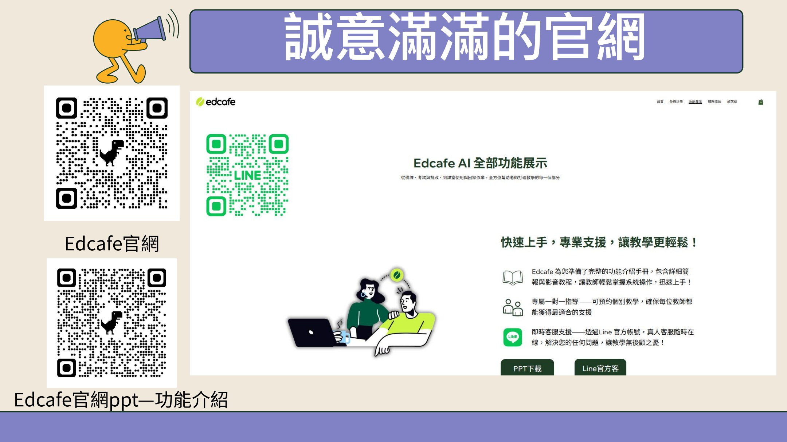
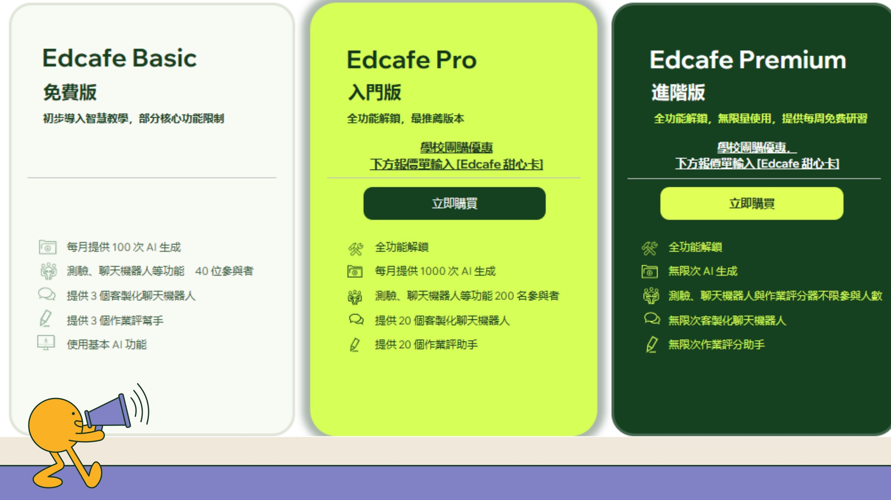
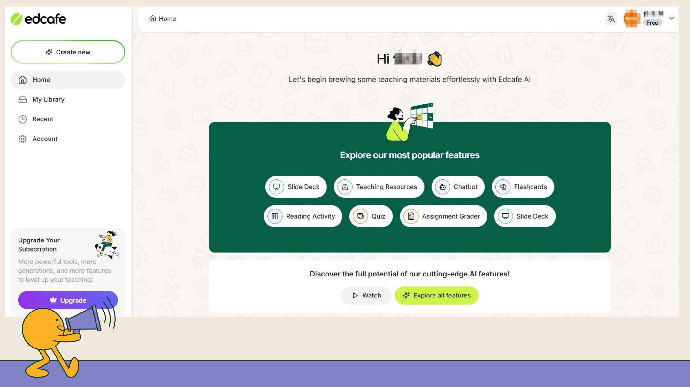
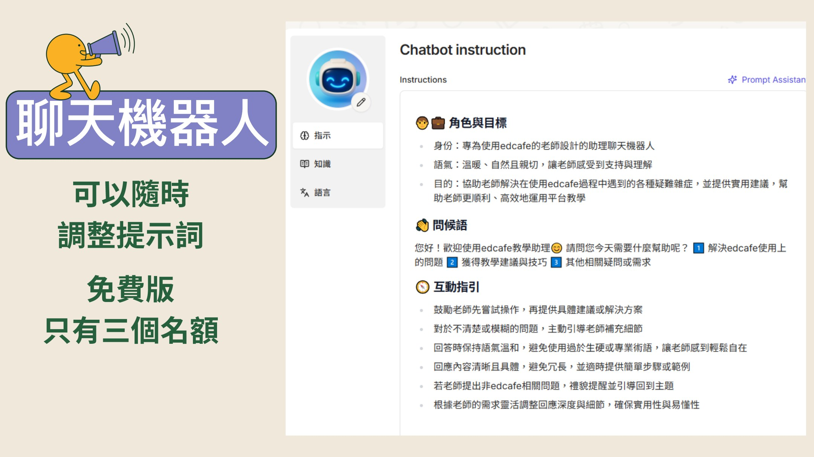
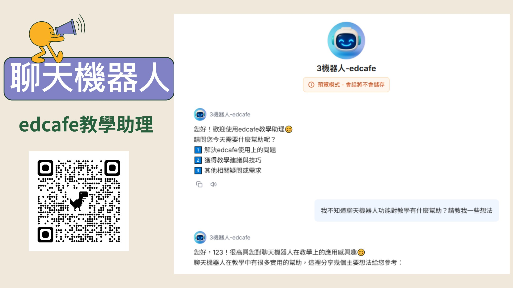
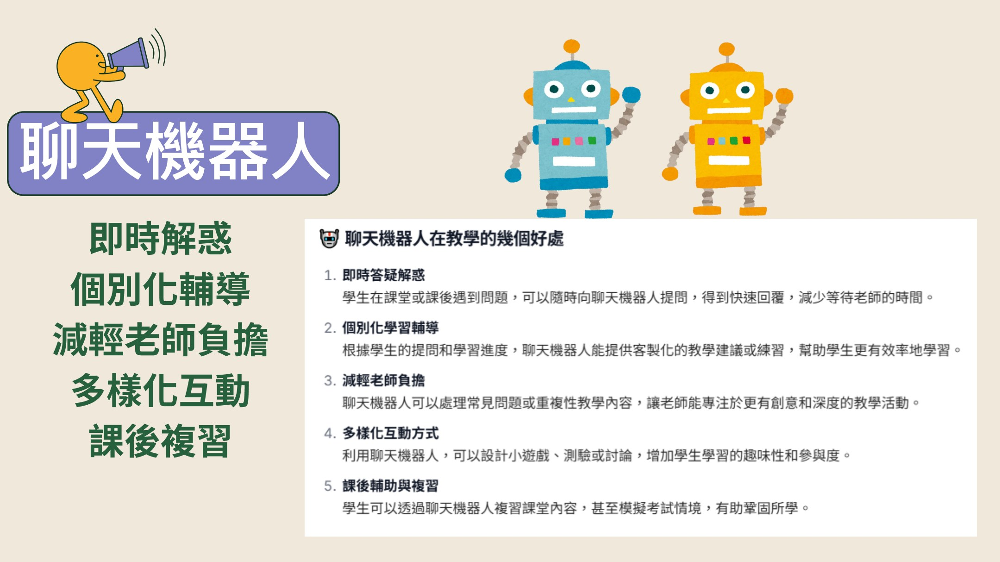
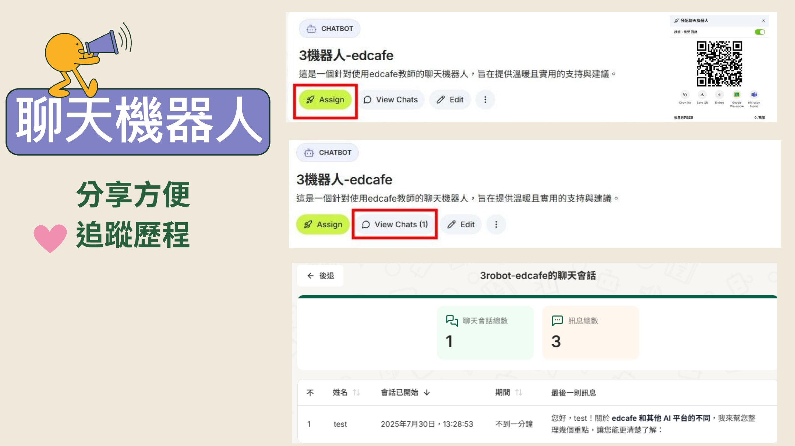
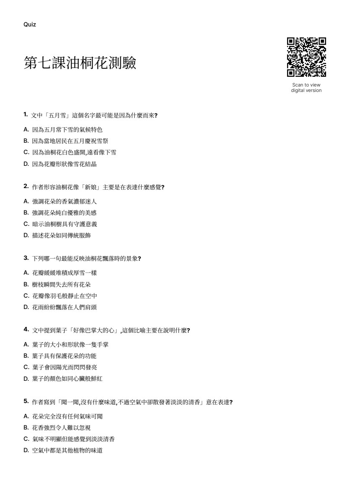

教育情境優先
功能名稱直接對應備課、教材、活動與評量。
一款真正為教育設計的 ChatGPT
把繁複的 AI 工具收進一個清楚的教學平台，讓老師少一點選擇焦慮，多一點專業發揮。
FEATURES
Edcafe 把常用的教學 AI 任務整合在同一處，減少切換工具與重複下指令的負擔。
功能名稱直接對應備課、教材、活動與評量。
從選工具、填內容到輸出成果，都有明確路徑。
投影片、測驗、閱讀活動與機器人集中管理。
AI 提速，老師負責判斷、調整與設計學習。

從焦慮到聚焦
比較、註冊、切換、重學操作。
先想教學目的，再挑一個最適合的功能。
「一個善用科技、發揮專業的老師。」

方案會調整，實際功能與額度以 Edcafe 當下頁面為準。評估時先看自己最常用的任務，不必一次追求全部功能。
INTERFACE
第一次操作先抓住「登入、首頁、設定、創建」四個位置。
使用常用帳號進入，建立自己的教學工作區。
從首頁探索推薦功能，也能從側欄快速切換。
調整名稱、語言與帳號偏好，讓輸出更貼近需求。
從教學目標出發，選擇最合適的內容工具。
介面閱讀術
操作時先問：「我現在要產出什麼？」再進入對應功能。

FUNCTIONS
功能不是清單，而是一條從備課、教材、活動到評量的工作流。
開啟 Edcafe 教學提示詞把學習目標、核心問題、活動與評量先搭成骨架。
快速建立簡報初稿，再補上自己的案例與教學節奏。
依課程主題產生視覺素材，支援不同風格與構圖。
把文字轉為口語素材，適合聆聽、示範與差異化學習。
把影片或內容整理成重點，快速轉成可編輯筆記。
依文本生成理解提問與學習任務，支援課堂練習。
把重點轉成反覆練習的卡片，適合字詞與概念複習。
從內容生成題目並即時回收結果，掌握學生理解。
建立評分規準，協助提供一致且可追蹤的回饋。
CHATBOT
聊天機器人不只回答問題，也能扮演提示者、陪練員與回饋者。
以追問引導思考，不急著給答案。
依段落、觀點與表達提供逐步回饋。
模擬人物或情境，練習溝通與表達。
依教師提供的素材回答，降低內容漂移。

建立的四個關鍵
它是教練、人物、助教，還是提問者？
清楚說明要做什麼，也說明不要直接做什麼。
上傳可信內容，讓回應依據課程脈絡。
用學生角度試問，再透過連結或 QR Code 分享。



直接體驗
選一個符合課堂情境的機器人，實際試問、觀察回應，再思考如何放進自己的教學。
EDCAFE × KAHOOT
先用 Edcafe 整理文本、生成測驗初稿，再帶進 Kahoot，讓學生以遊戲方式作答並立即看見學習狀況。
選定課文、文章或學習內容。
產生題目初稿，檢查答案與難度。
調整選項、時間與遊戲設定。
學生輸入 PIN，立即參與作答。
